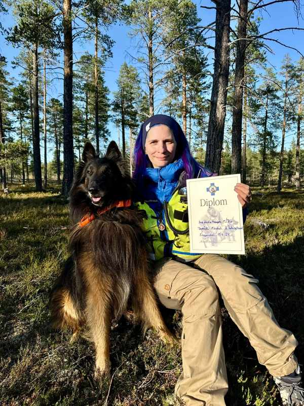

About me
I'm Ann Kristin and this is my school exam finishing up the first year of Front-end development with Noroff.
The task was to create a blog, and I chose to create a blog about a subject that is very dear to my heart, training towards becoming a certified search and rescue equipage.
This blog will show a bit of the struggles and joys of all the work that is put into one day hopefully becoming certified.
A huge thanks to all my team mates on NRH Hedmark lag for all the fun and help at training, and to all the awesome team mates letting me do a presentation of them here.
